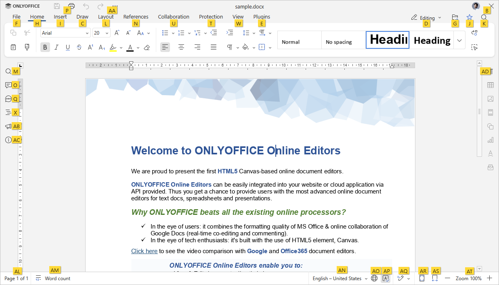
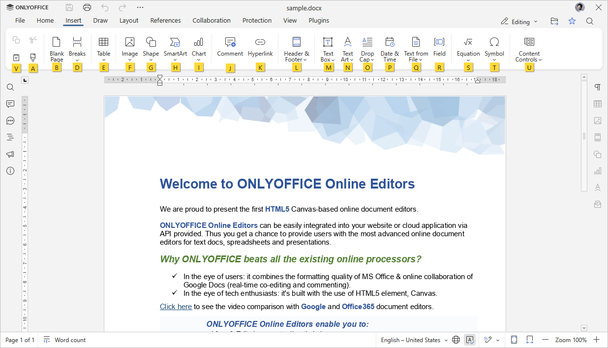

Kratice na tastaturi
Kratice na tastaturi za Key Tips
Koristite kratice na tastaturi za brži i lakši pristup funkcijama Document Editor-a bez upotrebe miša.
- Pritisnite Alt (Option za macOS) da uključite sve Key Tips za zaglavlje editora, gornju alatnu traku, desni i levi sidebar i statusnu traku.
-
Pritisnite slovo koje odgovara stavci koju želite koristiti. Dodatni Key Tips mogu se pojaviti u zavisnosti od pritisnute tipke. Prvi Key Tips nestaju kada se pojave dodatni.
Na primer, da biste pristupili Insert kartici, pritisnite Alt (Option za macOS) da vidite sve primarne Key Tips.

Pritisnite slovo I da pristupite Insert kartici i vidite sve dostupne prečice za ovu karticu.

Zatim pritisnite slovo koje odgovara stavci koju želite konfigurisati.
- Pritisnite Alt (Option za macOS) da sakrijete sve Key Tips, ili pritisnite Escape da se vratite na prethodnu grupu Key Tips.
Najčešće korišćene kratice na tastaturi pronađite u listi ispod.
Napomena: za macOS, neke kratice koriste Home, End, Page Up i Page Down koje su dostupne samo na proširenoj tastaturi. Ako nemate ove tastere, koristite gore navedene kratice (npr. ^ Ctrl/⌘ Cmd+← ili Fn+← umesto Home, ^ Ctrl/⌘ Cmd+→ ili Fn+→ umesto End, Fn+↑ umesto Page Up, Fn+↓ umesto Page Down).
- Windows/Linux
- Mac OS
| Rad sa dokumentom | |||
|---|---|---|---|
| Otvori 'File' panel | Alt+F | ^ Ctrl+⌥ Option+F | Otvori File panel da sačuvate, preuzmete, odštampate trenutni dokument, pogledate informacije, kreirate novi dokument ili otvorite postojeći, pristupite Dokument Editor Help Center-u ili naprednim podešavanjima. |
| Otvori 'Find' dijalog prozor | Ctrl+F | ^ Ctrl+F, ⌘ Cmd+F |
Otvori Find dijalog prozor da započnete pretragu karaktera/reči/fraze u trenutno uređivanom dokumentu. |
| Otvori 'Find and Replace' meni (panel) sa poljem za zamenu | Ctrl+H | ^ Ctrl+H | Otvori Find and Replace meni (panel) sa poljem za zamenu da zamenite jedno ili više pojavljivanja pronađenih karaktera. |
| Otvori 'Comments' panel | Ctrl+⇧ Shift+H | ^ Ctrl+⇧ Shift+H, ⌘ Cmd+⇧ Shift+H |
Otvori Comments panel da dodate svoj komentar ili odgovorite na komentare drugih korisnika. |
| Otvori polje za komentar | Alt+H | ⌘ Cmd+⌥ Option+A | Otvori polje za unos gde možete dodati tekst svog komentara. |
| Otvori 'Chat' panel (Online Editors) | Alt+Q | ^ Ctrl+⌥ Option+Q | Otvori Chat panel u Online Editors i pošaljite poruku. |
| Sačuvaj dokument | Ctrl+S | ^ Ctrl+S, ⌘ Cmd+S |
Sačuvaj sve izmene u trenutno uređivanom dokumentu. Aktivni fajl će biti sačuvan sa trenutnim imenom, lokacijom i formatom. |
| Štampaj dokument | Ctrl+P | ^ Ctrl+P, ⌘ Cmd+P |
Odštampajte dokument pomoću jednog od dostupnih štampača ili sačuvajte kao fajl. |
| Preuzmi kao... | Ctrl+⇧ Shift+S | ^ Ctrl+⇧ Shift+S, ⌘ Cmd+⇧ Shift+S |
Otvori Preuzmi kao... panel da sačuvate trenutno uređeni dokument na hard disk vašeg računara u jednom od podržanih formata: DOCX, DOTX, ODT, OTT, RTF, TXT, HTML, FB2, EPUB, PDF, PDF/A, PNG, JPG. |
| Ceo ekran (Online urednici) | F11 | Prebaci na prikaz preko celog ekrana u Online urednicima da bi se Uređivač dokumenata uklopio u ekran. | |
| Meni Pomoć | F1 | Fn+F1 | Otvori meni Pomoć u Uređivaču dokumenata. |
| Otvori postojeći fajl | Ctrl+O | ⌘ Cmd+O | Otvori standardni dijalog koji omogućava izbor postojećeg fajla. Ako odabereš fajl u ovom dijalogu i klikneš Otvori, fajl će biti otvoren u novom tabu ili prozoru Desktop urednika. |
| Prebaci na sledeći tab | Ctrl+↹ Tab | ^ Ctrl+↹ Tab | Prebaci na sledeći tab fajla u Desktop urednicima ili tab u pregledaču u Online urednicima. |
| Prebaci na prethodni tab | Ctrl+Shift+↹ Tab | ^ Ctrl+⇧ Shift+↹ Tab | Prebaci na prethodni tab fajla u Desktop urednicima ili tab u pregledaču u Online urednicima. |
| Zatvori fajl | Ctrl+W | ⌘ Cmd+W | Zatvori trenutni prozor dokumenta. |
| Kontekstualni meni elementa | ⇧ Shift+F10 | ⇧ Shift+Fn+F10 | Otvori kontekstualni meni izabranog elementa. |
| Zatvori meni ili modalni prozor, resetuj režime itd. | Esc | Esc | Zatvori meni ili modalni prozor. Resetuj iskačuće prozore i oblačiće sa komentarima i pregledom izmena. Resetuj režim crtanja i brisanja tabela. Resetuj prevlačenje teksta. Resetuj režim izbora markera. Resetuj režim prenosa formata. Poništi izbor oblika. Resetuj režim dodavanja oblika. Izađi iz zaglavlja/podnožja. Izađi iz popunjavanja obrazaca. |
| Resetuj parametar ‘Zumiranje’ | Ctrl+0 | ^ Ctrl+0 ili ⌘ Cmd+0 | Resetuj parametar ‘Zumiranje’ trenutnog dokumenta na podrazumevanih 100%. |
| Ažuriraj polja | F9 | Fn+F9 | Ažuriraj polja (npr. Tabelu sadržaja). |
| Navigacija | |||
| Skoči na početak reda | Home | ⌘ Cmd+← Home |
Postavi kursor na početak trenutno uređivanog reda. |
| Skoči na početak dokumenta | Ctrl+Home | ^ Ctrl+Fn+←, ⌘ Cmd+Fn+← ^ Ctrl+Home, ⌘ Cmd+Home |
Postavi kursor na sam početak trenutno uređivanog dokumenta. |
| Skoči na kraj reda | End | ⌘ Cmd+→ End |
Postavi kursor na kraj trenutno uređivanog reda. |
| Skoči na kraj dokumenta | Ctrl+End | ^ Ctrl+Fn+→, ⌘ Cmd+Fn+→ ^ Ctrl+End, ⌘ Cmd+End |
Postavi kursor na sam kraj trenutno uređivanog dokumenta. |
| Skoči na početak prethodne strane | Alt+Ctrl+Page Up | ⌥ Option+Fn+↑, ⌘ Cmd+Fn+↑ ⌥ Option+Page Up, ⌘ Cmd+Page Up |
Postavi kursor na sam početak strane koja prethodi trenutno uređivanoj. |
| Skoči na početak sledeće strane | Alt+Ctrl+Page Down | ⌥ Option+Fn+↓, ⌘ Cmd+Fn+↓ ⌥ Option+Page Down, ⌘ Cmd+Page Down |
Postavi kursor na sam početak strane koja sledi nakon trenutno uređivane. |
| Pomeraj naniže | Page Down | Fn+↓ Page Down |
Pomeraj dokument otprilike jednu vidljivu stranicu naniže. |
| Pomeraj naviše | Page Up | Fn+↑ Page Up |
Pomeraj dokument otprilike jednu vidljivu stranicu naviše. |
| Sledeća strana | Alt+Page Down | Idi na sledeću stranu u trenutno uređivanom dokumentu. | |
| Prethodna strana | Alt+Page Up | Idi na prethodnu stranu u trenutno uređivanom dokumentu. | |
| Uvećaj | Ctrl+Num+, Ctrl++ (na glavnoj tastaturi) |
^ Ctrl++, ⌘ Cmd++ |
Uvećaj trenutno uređivani dokument. |
| Smanji | Ctrl+- (na glavnoj tastaturi) | ^ Ctrl+-, ⌘ Cmd+- |
Smanji trenutno uređivani dokument. |
| Pomeraj za jedan znak levo/desno ili jedan red gore/dole | ← → ↑ ↓ | ← → ↑ ↓ | Pomeraj kursor za jedan znak levo/desno ili jedan red gore/dole. |
| Idi na početak reči ili jednu reč ulevo | Ctrl+← | ⌥ Option+← | Pomeraj kursor na početak reči ili jednu reč ulevo. |
| Idi jednu reč udesno | Ctrl+→ | ⌥ Option+→ | Pomeraj kursor jednu reč udesno. |
| Kretanje između kontrola u dijalozima | ↹ Tab/⇧ Shift+↹ Tab | ↹ Tab/⇧ Shift+↹ Tab | Kreći se između kontrola da bi fokus prešao na sledeću ili prethodnu kontrolu u dijalozima. |
| Idi na donje zaglavlje/podnožje | Page Down | Fn+↓ Page Down |
Idi na donje zaglavlje/podnožje (ako je kursor u zaglavlju/podnožju). |
| Idi na gornje zaglavlje/podnožje | Page Up | Fn+↑ Page Up |
Idi na gornje zaglavlje/podnožje (ako je kursor u zaglavlju/podnožju). |
| Idi na donje zaglavlje | Alt+Page Down | ⌥ Option+Fn+↓ ⌥ Option+Page Down |
Idi na donje zaglavlje (ako je kursor u zaglavlju/podnožju). |
| Idi na gornje zaglavlje | Alt+Page Up | ⌥ Option+Fn+↑ ⌥ Option+Page Up |
Idi na gornje zaglavlje (ako je kursor u zaglavlju/podnožju). |
| Pisanje | |||
| Završi pasus | ↵ Enter | ↵ Return | Završi trenutni pasus i započni novi. |
| Dodaj prelom reda | ⇧ Shift+↵ Enter | ⇧ Shift+↵ Return | Dodaj prelom reda bez započinjanja novog pasusa. |
| Dodaj novi čuvar mesta u argumentu jednačine | Enter | Return | Dodaj novi čuvar mesta u argumentu jednačine. |
| Promeni nivo poravnanja operatora ulevo | ⇧ Shift+↹ Tab | ⇧ Shift+↹ Tab | Promeni nivo poravnanja operatora ulevo (za drugi red jednačine sa prinudnim prelazom). |
| Promeni nivo poravnanja operatora udesno | ↹ Tab | ↹ Tab | Promeni nivo poravnanja operatora udesno (za drugi red jednačine sa prinudnim prelazom). |
| Obriši znak sa leve strane | ← Backspace | Delete | Obriši jedan znak levo od kursora. |
| Obriši znak sa desne strane | Delete | Fn+Delete | Obriši jedan znak desno od kursora. |
| Obriši reč/izbor/grafički objekat levo od kursora | Ctrl+← Backspace | ⌥ Option+Delete | Obriši jednu reč/izbor/grafički objekat levo od kursora. |
| Obriši reč/izbor/grafički objekat desno od kursora | Ctrl+Delete | Fn+⌥ Option+Delete | Obriši jednu reč/izbor/grafički objekat desno od kursora. |
| Napravi neprekidni razmak | Ctrl+⇧ Shift+␣ Spacebar | ^ Ctrl+⇧ Shift+Fn+␣ Spacebar, ⌘ Cmd+⇧ Shift+Fn+␣ Spacebar |
Napravi razmak između znakova koji ne može da se koristi za početak novog reda. |
| Napravi neprekidnu crticu | Ctrl+⇧ Shift+- | ^ Ctrl+⇧ Shift+-, ⌘ Cmd+⇧ Shift+- |
Napravi crticu između znakova koja ne može da se koristi za početak novog reda. |
| Poništi i Ponovi | |||
| Poništi | Ctrl+Z | ^ Ctrl+Z, ⌘ Cmd+Z |
Poništi poslednju izvršenu radnju. |
| Ponovi | Ctrl+Y | ^ Ctrl+Y, ⌘ Cmd+Y |
Ponovi poslednju poništenu radnju. |
| Iseci, Kopiraj i Nalepi | |||
| Iseci | Ctrl+X, ⇧ Shift+Delete |
⌘ Cmd+X | Obriši izabrani deo teksta i pošalji ga u memoriju privremene ostave računara. Kopirani tekst može kasnije biti ubačen na drugo mesto u istom dokumentu, u drugi dokument ili u neki drugi program. |
| Kopiraj | Ctrl+C, Ctrl+Insert |
⌘ Cmd+C | Pošalji izabrani deo teksta u memoriju privremene ostave računara. Kopirani tekst može kasnije biti ubačen na drugo mesto u istom dokumentu, u drugi dokument ili u neki drugi program. |
| Nalepi | Ctrl+V, ⇧ Shift+Insert |
⌘ Cmd+V | Ubaci prethodno kopirani deo teksta iz memorije privremene ostave računara na trenutnu poziciju kursora. Tekst može biti ranije kopiran iz istog dokumenta, iz drugog dokumenta ili iz nekog drugog programa. |
| Nalepi tekst bez formatiranja stila | Ctrl+⇧ Shift+V | ⌘ Cmd+⇧ Shift+V | Ubaci prethodno kopirani deo teksta iz memorije privremene ostave računara na trenutnu poziciju kursora bez čuvanja originalnog formatiranja. Tekst može biti ranije kopiran iz istog dokumenta, iz drugog dokumenta ili iz nekog drugog programa. |
| Kopiraj stil | Alt+Ctrl+C | ⌘ Cmd+⌥ Option+C, ^ Ctrl+⌥ Option+C |
Kopiraj formatiranje iz izabranog dela trenutno uređivanog teksta. Kopirano formatiranje može kasnije biti primenjeno na drugi deo teksta u istom dokumentu. |
| Primeni stil | Alt+Ctrl+V | ⌘ Cmd+⌥ Option+V, ^ Ctrl+⌥ Option+V |
Primeni prethodno kopirano formatiranje na tekst u trenutno otvorenom dokumentu. |
| Opcije specijalnog nalepljivanja 1 | |||
| Zadrži izvorno formatiranje | Ctrl pa K | ^ Ctrl pa K | Zadrži izvorno formatiranje kopiranog teksta. |
| Samo tekst | Ctrl pa T | ^ Ctrl pa T | Nalepi tekst bez njegovog izvornog formatiranja. |
| Prepiši ćelije | Ctrl pa O | ^ Ctrl pa O | Zameni sadržaj postojeće tabele kopiranim podacima. |
| Ugneždi tabelu | Ctrl pa N | ^ Ctrl pa N | Nalepi kopiranu tabelu kao ugnježdenu tabelu u izabranu ćeliju postojeće tabele. |
| Rad sa hipervezama | |||
| Ubaci hipervezu | Ctrl+K | ⌘ Cmd+K, ^ Ctrl+K |
Ubaci hipervezu koja vodi na veb adresu. |
| Otvori hipervezu | Enter | Return | Otvori hipervezu (ako se kursor nalazi unutar hiperveze). |
| Izbor teksta | |||
| Izaberi sve | Ctrl+A | ⌘ Cmd+A, ^ Ctrl+A |
Izaberi ceo tekst dokumenta zajedno sa tabelama i slikama. |
| Izaberi od kursora do početka reda | ⇧ Shift+Home | ⇧ Shift+Fn+← ⇧ Shift+Home |
Izaberi deo teksta od kursora do početka trenutnog reda. |
| Izaberi od kursora do kraja reda | ⇧ Shift+End | ⇧ Shift+Fn+→ ⇧ Shift+End |
Izaberi deo teksta od kursora do kraja trenutnog reda. |
| Izaberi od kursora do početka dokumenta | Ctrl+⇧ Shift+Home | ^ Ctrl+⇧ Shift+Fn+←, ⌘ Cmd+⇧ Shift+Fn+← ^ Ctrl+⇧ Shift+Home, ⌘ Cmd+⇧ Shift+Home |
Izaberi deo teksta od kursora do početka dokumenta. |
| Izaberi od kursora do kraja dokumenta | Ctrl+⇧ Shift+End | ^ Ctrl+⇧ Shift+Fn+→, ⌘ Cmd+⇧ Shift+Fn+→ ^ Ctrl+⇧ Shift+End, ⌘ Cmd+⇧ Shift+End |
Izaberi deo teksta od kursora do kraja dokumenta. |
| Izaberi jedan znak desno | ⇧ Shift+→ | ⇧ Shift+→ | Izaberi jedan znak desno od pozicije kursora. |
| Izaberi jedan znak levo | ⇧ Shift+← | ⇧ Shift+← | Izaberi jedan znak levo od pozicije kursora. |
| Izaberi do kraja reči | Ctrl+⇧ Shift+→ | ⇧ Shift+⌥ Option+→ | Izaberi deo teksta od kursora do kraja reči. |
| Izaberi do početka reči | Ctrl+⇧ Shift+← | ⇧ Shift+⌥ Option+← | Izaberi deo teksta od kursora do početka reči. |
| Izaberi jedan red gore | ⇧ Shift+↑ | ⇧ Shift+↑ | Pomerite kursor jedan red gore, birajući sve znakove između prethodne i trenutne pozicije kursora. |
| Izaberi jedan red dole | ⇧ Shift+↓ | ⇧ Shift+↓ | Pomerite kursor jedan red dole, birajući sve znakove između prethodne i trenutne pozicije kursora. |
| Izaberi stranicu gore do vrha ekrana | ⇧ Shift+Page Up | ⇧ Shift+Fn+↑ ⇧ Shift+Page Up |
Izaberi deo stranice od pozicije kursora do vrha ekrana. |
| Izaberi stranicu dole do dna ekrana | ⇧ Shift+Page Down | ⇧ Shift+Fn+↓ ⇧ Shift+Page Down |
Izaberi deo stranice od pozicije kursora do dna ekrana. |
| Izaberi do početka prethodne stranice | Ctrl+⇧ Shift+Page Up | ^ Ctrl+⇧ Shift+Fn+↑, ⌘ Cmd+⇧ Shift+Fn+↑ ^ Ctrl+⇧ Shift+Page Up, ⌘ Cmd+⇧ Shift+Page Up |
Izaberi deo teksta od kursora do početka prethodne stranice. |
| Izaberi do početka sledeće stranice | Ctrl+⇧ Shift+Page Down | ^ Ctrl+⇧ Shift+Fn+↓, ⌘ Cmd+⇧ Shift+Fn+↓ ^ Ctrl+⇧ Shift+Page Down, ⌘ Cmd+⇧ Shift+Page Down |
Izaberi deo teksta od kursora do početka sledeće stranice. |
| Stil teksta | |||
| Bold | Ctrl+B | ^ Ctrl+B, ⌘ Cmd+B |
Učini font izabranog teksta tamnijim i debljim od normalnog. |
| Italic | Ctrl+I | ^ Ctrl+I, ⌘ Cmd+I |
Učini font izabranog teksta kurzivnim i blago nagnutim. |
| Underline | Ctrl+U | ^ Ctrl+U, ⌘ Cmd+U |
Podvuci izabrani tekst linijom ispod slova. |
| Strikeout | Ctrl+5 | ⌘ Cmd+⇧ Shift+x | Precrtajte izabrani tekst linijom kroz slova. |
| Subscript | Ctrl+. | ^ Ctrl+., ⌘ Cmd+. |
Umanji izabrani tekst i postavi ga ispod linije teksta (npr. u hemijskim formulama). |
| Superscript | Ctrl+, | ^ Ctrl+,, ⌘ Cmd+, |
Umanji izabrani tekst i postavi ga iznad linije teksta (npr. u razlomcima). |
| Heading 1 style | Alt+1 | ⌥ Option+^ Ctrl+1, ⌥ Option+⌘ Cmd+1 |
Primeni stil naslova 1 na izabrani tekst. |
| Heading 2 style | Alt+2 | ⌥ Option+^ Ctrl+2, ⌥ Option+⌘ Cmd+2 |
Primeni stil naslova 2 na izabrani tekst. |
| Heading 3 style | Alt+3 | ⌥ Option+^ Ctrl+3, ⌥ Option+⌘ Cmd+3 |
Primeni stil naslova 3 na izabrani tekst. |
| Lista sa oznakama | Ctrl+⇧ Shift+L | ^ Ctrl+⇧ Shift+L, ⌘ Cmd+⇧ Shift+L |
Kreiraj neuređenu listu sa oznakama od izabranog teksta ili započni novu. |
| Obriši formatiranje | Ctrl+␣ Spacebar | ^ Ctrl+Fn+␣ Spacebar, ⌘ Cmd+Fn+␣ Spacebar |
Obriši formatiranje izabranog teksta. |
| Povećaj font | Ctrl+] | ⌘ Cmd+], ^ Ctrl+] |
Povećaj veličinu fonta izabranog teksta za 1 poen. |
| Smanji font | Ctrl+[ | ⌘ Cmd+[, ^ Ctrl+[ |
Smanji veličinu fonta izabranog teksta za 1 poen. |
| Centriraj tekst | Ctrl+E | ^ Ctrl+E, ⌘ Cmd+E |
Prebaci pasus između centriranog i levo poravnanog teksta. |
| Poravnaj tekst po širini | Ctrl+J | ^ Ctrl+J, ⌘ Cmd+J |
Prebaci pasus između poravnanja po širini i levo poravnanog teksta. |
| Poravnaj desno | Ctrl+R | ^ Ctrl+R, ⌘ Cmd+R |
Prebaci pasus između desno poravnanog i levo poravnanog teksta. |
| Poravnaj levo | Ctrl+L | ^ Ctrl+L, ⌘ Cmd+L |
Poravnaj pasus levo. |
| Ubaci prelazak na novu stranu | Ctrl+↵ Enter | ^ Ctrl+↵ Return, ⌘ Cmd+↵ Return |
Ubaci prelazak na novu stranu na trenutnoj poziciji kursora. |
| Povećaj uvlačenje | Ctrl+M | ^ Ctrl+M, ⌘ Cmd+M |
Povećaj uvlačenje pasusa sa leve strane. |
| Smanji uvlačenje | Ctrl+⇧ Shift+M | ^ Ctrl+⇧ Shift+M, ⌘ Cmd+⇧ Shift+M |
Smanji uvlačenje pasusa sa leve strane. |
| Dodaj broj strane | Ctrl+⇧ Shift+P | ^ Ctrl+⇧ Shift+P, ⌘ Cmd+⇧ Shift+P |
Dodaj trenutni broj strane na poziciju kursora. |
| Neštampajući znakovi | Ctrl+⇧ Shift+8 | ^ Ctrl+⇧ Shift+8, ⌘ Cmd+⇧ Shift+8 |
Prikaži ili sakrij neštampajuće znakove. |
| Povećaj nivo liste/uvlačenja | ↹ Tab | ↹ Tab | Povećaj nivo liste/uvlačenja (ako je kursor na početku pasusa). |
| Smanji nivo liste/uvlačenja | ⇧ Shift+↹ Tab | ⇧ Shift+↹ Tab | Smanji nivo liste/uvlačenja (ako je kursor na početku pasusa). |
| Dodaj tab karakter u pasus | ↹ Tab | ↹ Tab | Dodaj tab karakter u pasus (ako kursor nije na početku pasusa). |
| Povećaj uvlačenje za izabrane pasuse | ↹ Tab | ↹ Tab | Povećaj uvlačenje za izabrane pasuse. |
| Smanji uvlačenje za izabrane pasuse | ⇧ Shift+↹ Tab | ⇧ Shift+↹ Tab | Smanji uvlačenje za izabrane pasuse. |
| Rad sa objektima | |||
| Rad sa oblicima | ↵ Enter | Return | Kada je oblik izabran, ako ne sadrži sadržaj, kreiraj sadržaj i pomeri kursor na početak reda. Ako sadržaj postoji, izaberi ga ceo. |
| Rad sa grafikonima | ↵ Enter | Kada je naslov grafikona izabran, ako je prazan, postavi kursor na početak reda, u suprotnom izaberi tekst. | |
| Kreiraj kopiju prilikom prevlačenja | Ctrl | ^ Ctrl | Izaberi objekat i drži navedeni taster dok ga prevlačiš da bi napravio kopiju na mestu gde je pomeren. |
| Ograniči kretanje | ⇧ Shift + prevlačenje | ⇧ Shift + prevlačenje | Ograniči kretanje izabranog objekta horizontalno ili vertikalno. |
| Postavi rotaciju od 15 stepeni | ⇧ Shift + prevlačenje (pri rotiranju) | ⇧ Shift + prevlačenje (pri rotiranju) | Ograniči ugao rotacije na korake od 15 stepeni. |
| Održi proporcije | ⇧ Shift + prevlačenje (pri promeni veličine) | ⇧ Shift + prevlačenje (pri promeni veličine) | Održi proporcije izabranog objekta prilikom promene veličine. |
| Promeni ugao linije/strelice pri crtanju | ⇧ Shift + prevlačenje (pri crtanju linija/strelica) | ⇧ Shift + prevlačenje (pri crtanju linija/strelica) | Drži Shift dok crtaš liniju/strelicu da bi ugao bio tačno 45 stepeni. |
| Pomeri objekat po pikselima | Ctrl+← → ↑ ↓ | ⌘ Cmd+← → ↑ ↓ | Drži navedeni taster i koristi strelice za pomeranje objekta po jedan piksel. |
| Pomeri oblik velikim korakom | ← → ↑ ↓ | ← → ↑ ↓ | Koristi strelice za pomeranje objekta većim korakom levo, desno, gore ili dole. |
| Prebaci fokus na sledeći objekat | ↹ Tab | ↹ Tab | Prebaci fokus na sledeći objekat nakon trenutno izabranog. |
| Prebaci fokus na prethodni objekat | ⇧ Shift+↹ Tab | ⇧ Shift+↹ Tab | Prebaci fokus na prethodni objekat pre trenutno izabranog. |
| Rad sa fusnotama/krajnotama | |||
| Ubaci krajnotu | Ctrl+Alt+D | ^ Ctrl+⌥ Option+D | Ubaci krajnotu. |
| Ubaci fusnotu | Ctrl+Alt+F | Ubaci fusnotu. | |
| Rad sa tabelama | |||
| Pređi na sledeću ćeliju u redu | ↹ Tab | ↹ Tab | Idi na sledeću ćeliju u redu tabele. |
| Pređi na prethodnu ćeliju u redu | ⇧ Shift+↹ Tab | ⇧ Shift+↹ Tab | Idi na prethodnu ćeliju u redu tabele. |
| Pređi na sledeći red | ↓ | ↓ | Idi na sledeći red u tabeli. |
| Pređi na prethodni red | ↑ | ↑ | Idi na prethodni red u tabeli. |
| Zapocni novi pasus | ↵ Enter | ↵ Return | Započni novi pasus unutar ćelije. |
| Dodaj novi red | ↹ Tab u donjoj desnoj ćeliji tabele | ↹ Tab u donjoj desnoj ćeliji tabele | Dodaj novi red na dno tabele. |
| Ubaci prekid tabele | Ctrl+⇧ Shift+↵ Enter | ^ Ctrl+⇧ Shift+↵ Return, ⌘ Cmd+⇧ Shift+↵ Return |
Ubaci prekid tabele unutar tabele. |
| Rad sa formularima | |||
| Pređi na sledeći formular | ↹ Tab | Pređi na sledeći formular. | |
| Pređi na prethodni formular | ⇧ Shift+↹ Tab | Pređi na prethodni formular. | |
| Izaberi sledeću opciju u combo box-u | ↓ | ↓ | Izaberi sledeću opciju u combo box-u. |
| Izaberi prethodnu opciju u combo box-u | ↑ | ↑ | Izaberi prethodnu opciju u combo box-u. |
| Dodaj prekid reda u višelinijskom formularu | Enter | Dodaj prekid reda u višelinijskom formularu. | |
| Ubacivanje specijalnih karaktera | |||
| Ubaci jednačinu | Alt+= | ⌥ Option+^ Ctrl+=,⌥ Option+⌘ Cmd+= | Ubaci jednačinu na trenutnu poziciju kursora. |
| Ubaci em-dash | Alt+Ctrl+Num- | ⌥ Option+⇧ Shift+- | Ubaci em-dash ‘—’ u dokument, desno od kursora. |
| Ubaci en-dash | Ctrl+Num- | ⌥ Option+- | Ubaci en-dash ‘-’ u dokument, desno od kursora. |
| Ubaci simbol autorskih prava | Ctrl+Alt+G | ⌘ Cmd+⌥ Option+G, ^ Ctrl+⌥ Option+G |
Ubaci simbol autorskih prava ‘©’ desno od kursora. |
| Ubaci simbol evra | Ctrl+Alt+E | ⌘ Cmd+⌥ Option+E, ^ Ctrl+⌥ Option+E |
Ubaci simbol evra (€) na trenutnu poziciju kursora. |
| Ubaci simbol registrovanog žiga | Ctrl+Alt+R | ⌘ Cmd+⌥ Option+R, ^ Ctrl+⌥ Option+R |
Ubaci simbol registrovanog žiga (®) na trenutnu poziciju kursora. |
| Ubaci simbol žiga | Ctrl+Alt+T | ⌘ Cmd+⌥ Option+T, ^ Ctrl+⌥ Option+T |
Ubaci simbol žiga (™) na trenutnu poziciju kursora. |
| Ubaci elipsu | Ctrl+Alt+. | ⌥ Option+; | Ubaci znak elipse (...) na trenutnu poziciju kursora. |
| Zameni izabrani Unicode kod simbolom | Alt+X | ⌥ Option+⌘ Cmd+X, ⌥ Option+^ Ctrl+X |
Zameni izabrani Unicode kod odgovarajućim simbolom. |
| Rad sa tastaturom koja podržava Unicode simbole | ⌥ Option+Q, ⌥ Option+F, ⇧ Shift+⌥ Option+7, i drugi |
Kada koristite ⌥ Option+taster prečice na tastaturama koje podržavaju Unicode simbole, dodaju se odgovarajući simboli. Primeri: Na engleskoj ABC tastaturi, ⌥ Option+Q ubacuje "œ", a ⌥ Option+F ubacuje simbol funkcije “ƒ”. Na US International w/o deadkeys, ⌥ Option+Q ubacuje “ä”. Na Swiss-german tastaturi, ⇧ Shift+⌥ Option+7 ubacuje simbol "\”. |
|
Nalepi kopirane podatke pomoću Ctrl+V na Windows ili Cmd+V na macOS. Nakon lepljenja, koristi Ctrl za otvaranje Paste Special menija, zatim pritisni odgovarajuće slovo za željenu opciju.